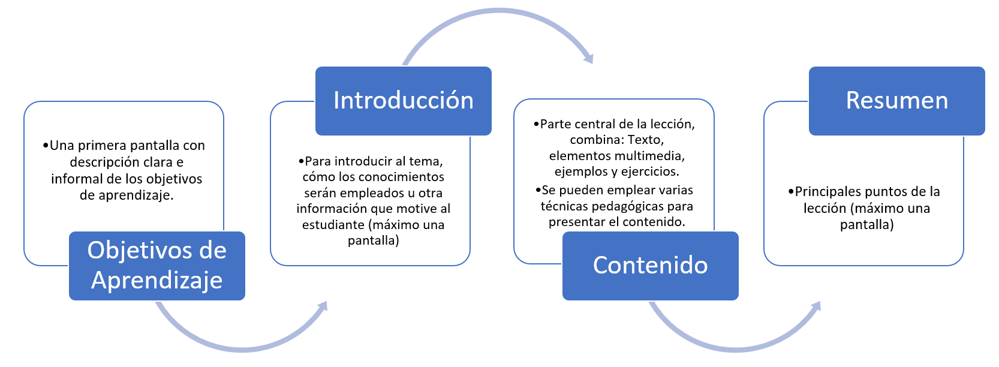
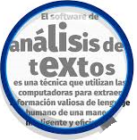
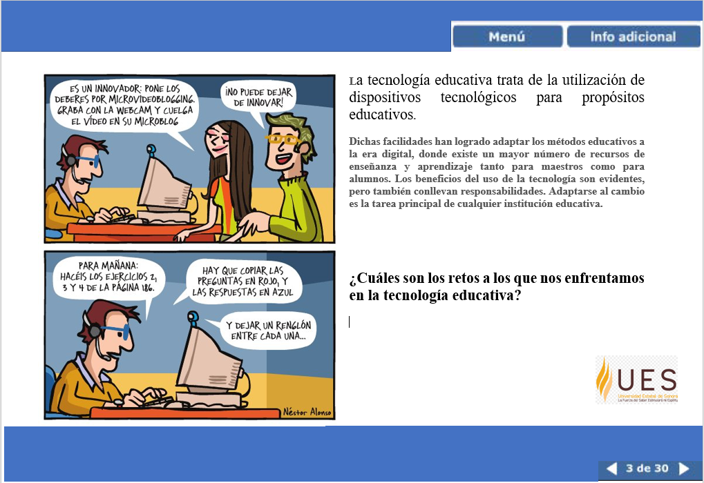
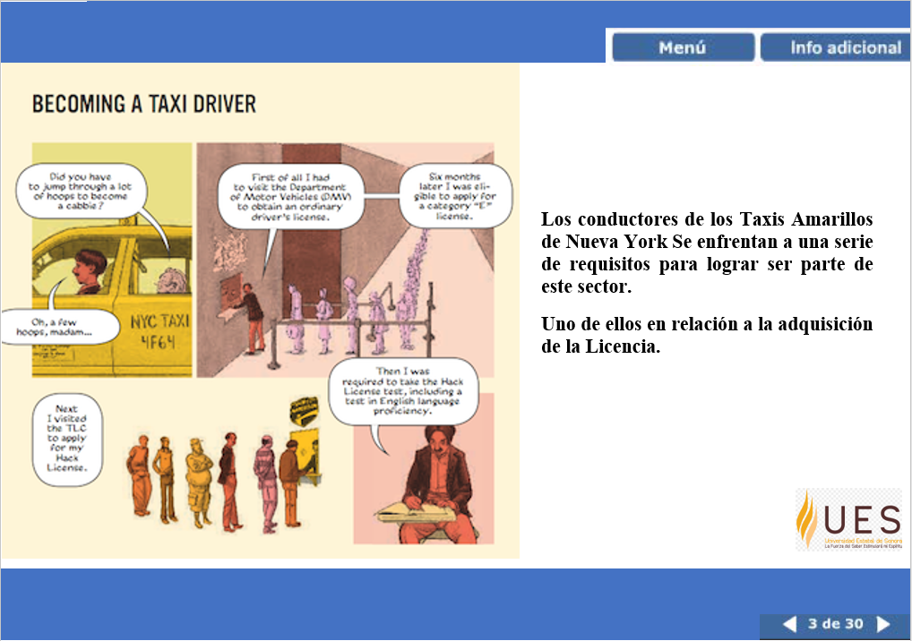
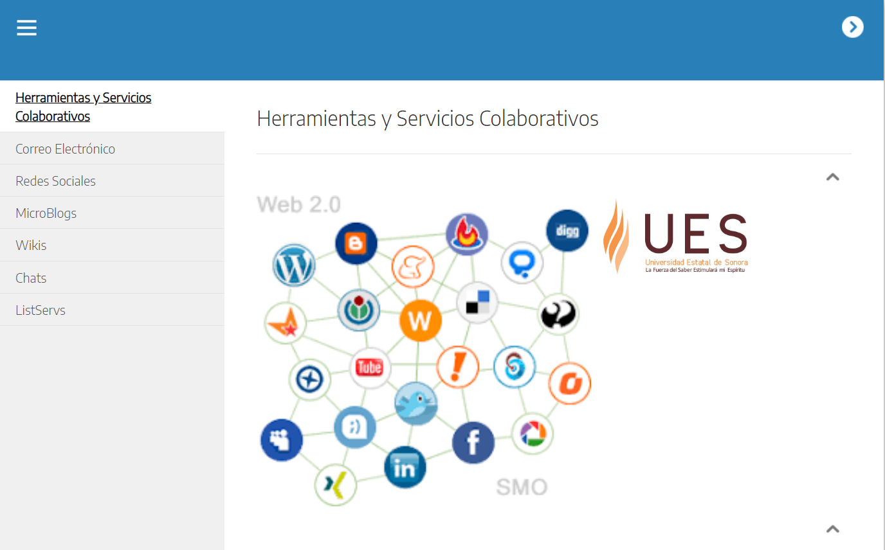

INTRODUCCIÓN
Como parte del diseño, fueron definidas estrategias y técnicas para un contenido interactivo que permita un trabajo autodirigido. Previo al desarrollo específicamente de lecciones e-learning, es importante estructurar un guion gráfico que posibilite claramente identificar qué elementos multimedia (gráficos, animaciones, pruebas, elementos de comunicación, etc.). son adecuados integrar para la técnica pedagógica con la que desean presentar su contenido, sugerencias, ejercicios prácticos, pruebas de evaluación, ejemplos y recursos adicionales extraídos de diferentes materiales fuente.
Para la estructura de una lección interactiva e-learning consideren:

.
Además, tomen en cuenta para esta fase de desarrollo algunas sugerencias para integrar elementos MULTIMEDIA, es importante emplearlos correctamente.
TEXTO
- Debe desplegarse en la pantalla para facilitar la lectura y aclaraciones.
- Faciliten la lectura por medio del espaciado entre palabras y el interlineado.
- Usen viñetas, listas o tablas para organizar y centrar la información.
- De ser posible, utilizar diagramas y organigramas para entender mejor el contenido.

GRÁFICOS
Las ILUSTRACIONES, IMÁGENES, DIAGRAMAS E ÍCONOS juegan un papel fundamental ya que además de agregar elementos visuales promueven el aprendizaje al resaltar, sugerir o ayudar a entender los conceptos.
- Pueden utilizarse de forma decorativa como elementos estéticos y humorísticos.
- Para representar un objeto de forma realista.
- Con la función de interpretar una teoría, principio o relación de causa-efecto.
- De forma organizacional para mostrar relaciones cualitativas dentro de los contenidos.
- Para mostrar relaciones cuantitativas entre dos o más variables, por ejemplo, gráficos lineales o circulares.
Evitar establecer este tipo de elemento multimedia si NO complementa la información de su texto, ya que pueden interferir con el proceso de comprensión del material presentado.
ANIMACIONES
Se utilizan normalmente las ANIMACIONES para mostrar una serie de pasos de procedimientos o transformaciones de objetos a través del tiempo o espacio. Permiten enfocarse en un objeto a la vez.
- Se recomienda separar las animaciones largas en segmentos por medio de botones a los cuales los estudiantes puedan acceder a su ritmo.
- No usar demasiados efectos de animación en el texto, ya que pueden interferir con el proceso de comprensión del material presentado.
AUDIO
El AUDIO lo puede emplear para resumir, desarrollar puntos importantes o acompañar con comentarios a elementos visuales de pantalla como las secuencias de animación, fotografías o vídeo. Esto permite No saturar al estudiante con gráficos y textos.
- Eviten que la información del audio sea la misma que se presenta en el texto. Se debe combinar la información del audio con lo escrito.
- Eviten agregar música o sonidos de fondo a un contenido narrado, ya que provocará que no se preste atención a la narración.
VÍDEO
El VÍDEO permite la reproducción de procedimientos y comportamientos de la misma manera que aparecen en la vida real. Por lo cual, se utiliza con frecuencia en un estudio de caso.
- Tomar en cuenta que requiere mayor ancho de banda para su reproducción.
- Deben ir acompañados de comentarios de texto escrito o de audio.
- Evitar vídeos que muestren solamente un instructor hablando sin presentar otro tipo de material.
Así como las técnicas para presentar contenido:
Enfoque Basado en Escenarios
Estas lecciones se utilizan para que el alumno desarrolle habilidades para la resolución de problemas al tomar decisiones eligiendo entre varias alternativas. Se les entrega toda la información necesaria para que puedan tomar decisiones correctas. Permite a los estudiantes aprender principios estratégicos aplicándolos a situaciones concretas y observando las consecuencias de sus decisiones.

La información que se proporciona al estudiante para la toma de decisiones puede integrarse en la descripción del escenario, como parte de la información disponible a través de enlace directo a documentos o enlaces a "Información adicional" o mediante retroalimentación que puede recibir en respuesta a preguntas que realice el mismo estudiante.
Narraciones
Proporcionan información a través de un relato que coloca el contenido en un contexto realista e ilustra las acciones y decisiones de uno o más personajes. El uso de narraciones se utiliza para trabajar conceptos complejos que de esta forma se hacen comprensibles para el estudiante, quien puede asimilar y recordar en forma de historia. Puede utilizar ilustraciones, imágenes o secuencia de vídeo.

La narración ayuda a los estudiantes a seguir el flujo de eventos a través del relato con frases cortas de personajes reales. Las explicaciones complejas deberán presentarse en pantallas teóricas, no como parte de los diálogos.
Caja de Herramientas
A través de esta técnica, se les permite a los estudiantes ir seleccionando entre una serie de temas de su interés, pueden llevar secuencia o sin seguir un enfoque secuencial. Se utiliza para presentar bloques cortos de contenido de una misma categoría, pero independientes entre sí, como, por ejemplo: etapas de procedimientos, descripciones de herramientas o preguntas frecuentes de un tema.

Se debe proporcionar una introducción antes de ingresar a la plantilla del menú para guiar a los estudiantes en las opciones que tendrán disponibles. En cada una de las opciones del menú se debe presentar la información de forma sistemática.

Una descripción de las pantallas a utilizar en la lección interactiva final.
Es importante considerar ejemplos, con el fin de que los conceptos otorgados cobren sentido. Los ejemplos pueden servir de base para plantear una serie de preguntas a los estudiantes.
Los ejercicios y las pruebas se recomienda usarlos siempre que sea posible en los temas críticos, con la finalidad se reforzar conocimientos y habilidades para el logro de los objetivos pedagógicos.
Los formatos de presentación de preguntas pueden ser: Selección múltiple, verdadero o falso, respuestas múltiples, emparejamiento, ordenar, llenar espacios en blanco, respuesta corta y respuesta larga o ensayo.
Tutoriales, material de apoyo a descargarse como listas de verificación, glosarios, enlaces a recursos Web, pop-ups o tooltip (elementos emergentes que se accionan al colocar el cursor encima) para proporcionar información adicional sin interrumpir el progreso de la lección.